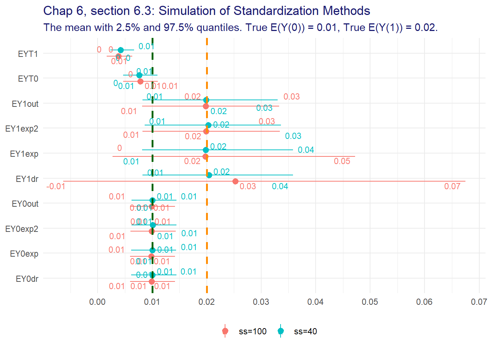

Chapter 8 Front-Door Method
library(dplyr)
library(ggdag)
library(patchwork)
library(ggplot2)
library(fciR)
options(dplyr.summarise.inform = FALSE)8.1 Motivation
scm_8.1 <- list()
scm_8.1 <- within(scm_8.1, {
coords <- list(
x = c(A = 1, S = 2, U = 2, Y = 3),
y = c(A = 1, S = 1, U = 2, Y = 1))
dag <- dagify(
A ~ U,
S ~ A,
Y ~ S + U,
coords = coords)
plot <- fciR::ggp_dag(dag)
})Figure 8.1: Front-door Causal DAG
When \(S\) is a surrogate marker
\[ \begin{align*} &\text{by double expectation rule} \\ E(Y \mid A) &= E_{S \mid A}(E(Y \mid A)) \\ &\text{by conditional expectation} \\ &= \sum_s E(Y \mid S=s, A) P(S=s \mid A) \\ &\text{because } Y \perp\!\!\!\perp A \mid S \\ &= \sum_s E(Y \mid S=s) P(S=s \mid A) \\ &\text{since there are no confounder for the effect of A on Y} \\ E(Y(a)) = E(Y \mid A=a) &= \sum_s E(Y \mid S=s) P(S=s \mid A=a) \end{align*} \]
8.2 Theory and Method
Using (8.1) from above
\[ \begin{align*} E(Y(a)) = E(Y \mid A=a) &= \sum_s E(Y \mid S=s) P(S=s \mid A=a) \\ &\text{and with backdoor standardization we have that} \\ &E(Y \mid S=s) = \sum_{a^\prime} E(Y \mid S=s, A=a^\prime)P(A = a^\prime) \\ \therefore \\ E(Y(a)) = E(Y \mid A=a) &= \sum_s P(S=s \mid A=a) \left[ \sum_{a^\prime} E(Y \mid S=s, A=a^\prime)P(A = a^\prime) \right] \\ \end{align*} \]
8.3 Simulated Example
sim1 <- function(n = 1e4, seed = 555) {
set.seed(seed)
# Generate the potential outcome Y(.,0) and Y(.,1)
Ydot0 <- rbinom(n, size = 1, prob = 0.05)
Ydot1 <- rbinom(n, size = 1, prob = 0.2)
# let A depend on Y(.,1)
probA <- (1 - Ydot1) * 0.1 + Ydot1 * 0.8
A <- rbinom(n, size = 1, prob = probA)
# Generate the potential outcome S(0) and S(1)
S0 <- rbinom(n, size = 1, prob = 0.05)
S1 <- rbinom(n, size = 1, prob = 0.9)
# S is a function of S0, S1 and A
S <- (1 - A) * S0 + A * S1
# Y is a function of Y(., 0) and Y(., 1) and S
Y <- (1 - S) * Ydot0 + S * Ydot1
data.frame(cbind(A, S, Y, Ydot0, Ydot1))
}sim1_df <- sim1()
sim1.front <- fciR::frontdr_np(sim1_df, outcome.name = "Y", exposure.name = "A", surrogate.name = "S")
sim1.front## EY0 EY1 RD RR RR* OR
## 0.05584704 0.18536722 0.12952018 3.31919505 1.15899210 3.84692084and we can estimates the confidence intervals using the usual bootstrapping.
